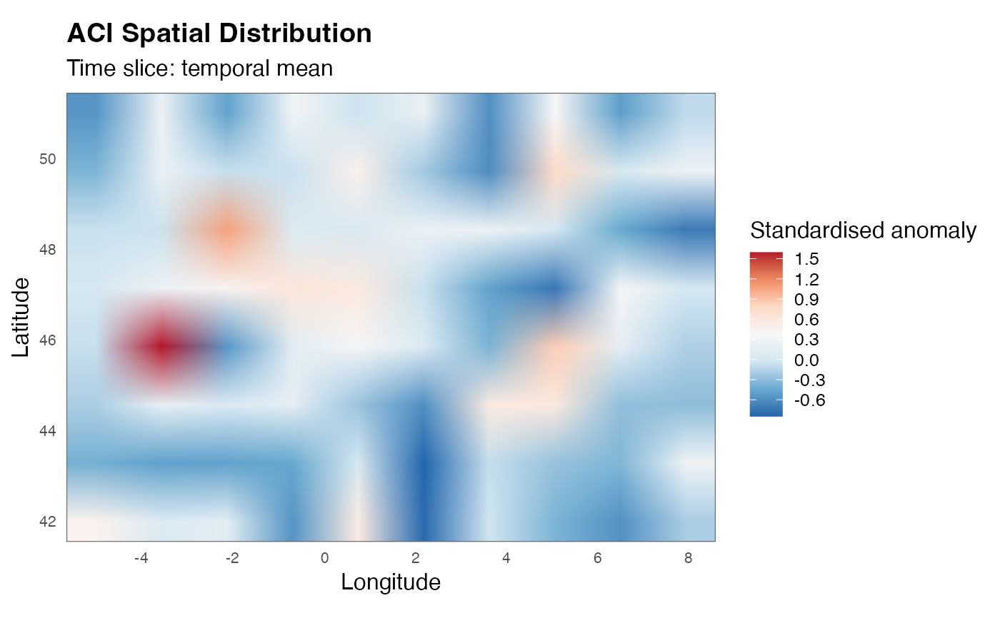
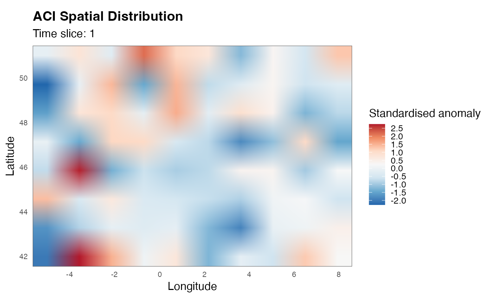

Handles three types of input, at any spatial aggregation level produced
by calculate_aci() (grid-cell, admin level 1, admin level 2, ...):
Bare array (e.g.
grid$t90,grid$ACI): a single component array as stored in the grid-cell list returned bycalculate_aci(area = FALSE). Self-describing via its attachedlon/lat/time/country_abbrevattributes, so it can be passed on its own. Renders a raster map. SinceACIand its components share the exact same array structure, this works identically whethervariableis a component or the ACI itself.Grid-cell list (the full output of
calculate_aci(area = FALSE), or ofload_component()):variableselects which field of the list to map. Renders a raster map.Administrative
data.frame(output ofcalculate_aci(admin_level = N)): renders a choropleth map.country_abbrev/admin_level/crs_metricare read from the data.frame's attributes when not supplied explicitly.
Usage
plot_aci_map(
data,
variable = "ACI",
time_index = "mean",
country_abbrev = NULL,
admin_level = NULL,
crs_metric = NULL,
var_label = "Standardised anomaly",
title = "ACI Spatial Distribution",
palette = "RdBu",
reverse = TRUE,
n_breaks = 9,
borders = TRUE
)Arguments
- data
A bare array (component or ACI, with attributes), a named list (grid-cell / raw dataset), or a
data.frame(admin output).- variable
Name of the variable to map when
datais a list. For grid-cell output use e.g."ACI","drought","t90". For admin output use"ACI"(columns must be namedACI_<unit>). Ignored whendatais already a bare array. Default"ACI".- time_index
Integer (1-based time slice) or
"mean"(default) to plot the temporal average.- country_abbrev
Three-letter ISO code. Required for admin maps and for overlaying country/region borders on raster maps. If
NULLanddatacarries acountry_abbrevattribute (as set bycalculate_aci()), that value is used automatically.- admin_level
Integer or
NULL. Required for admin maps; read fromdata's attributes when not supplied.- crs_metric
EPSG code used for admin choropleth projection only. If
NULL, read fromdata's attributes, falling back to4326. Ignored (with a warning if explicitly set) in raster (grid-cell) mode: the grid-cell data stays in its native EPSG:4326 (lon/lat), since reprojecting a fixed regular raster to a different CRS would distort/break it; the basemap is reprojected to 4326 to match it instead.- var_label
Colour-bar label. Default
"Standardised anomaly".- title
Plot title. Default
"ACI Spatial Distribution".- palette
RColorBrewer palette. Default
"RdBu".- reverse
Logical. Reverse colour scale? Default
TRUE.- n_breaks
Number of colour breaks. Default
9.- borders
Logical. Overlay administrative borders? Default
TRUE.
Offline vs. online examples
The first two examples below use a small synthetic 10x8x5
(lon x lat x time) grid and run offline (borders = FALSE).
Overlaying administrative borders, or plotting an admin-level
choropleth, additionally requires downloading boundary polygons via
geodata::gadm() and therefore a working internet connection; the
corresponding examples are wrapped in dontrun and not run
automatically by R CMD check.
Examples
lon <- seq(-5, 8, length.out = 10)
lat <- seq(42, 51, length.out = 8)
arr <- array(stats::rnorm(10 * 8 * 5), dim = c(10, 8, 5))
arr <- structure(arr, lon = lon, lat = lat,
time = seq_len(5), country_abbrev = "FRA")
# Bare array, self-describing thanks to its attributes
plot_aci_map(arr, time_index = "mean", borders = FALSE)

# Equivalent, via the parent list and `variable`
grid <- list(t90 = arr, lon = lon, lat = lat, time = seq_len(5))
plot_aci_map(grid, variable = "t90", time_index = 1, borders = FALSE)

if (FALSE) { # \dontrun{
plot_aci_map(arr, time_index = "mean", country_abbrev = "FRA")
admin <- calculate_aci(
temperature_data_path = "t2m_1960-2020.nc",
precipitation_data_path = "tp_1960-2020.nc",
wind_u10_data_path = "u10_1960-2020.nc",
wind_v10_data_path = "v10_1960-2020.nc",
country_abbrev = "FRA",
mask_data_path = "mask_FRA.nc",
study_period = c("1961-01-01", "2020-12-31"),
reference_period = c("1961-01-01", "1990-12-31"),
granularity = "year",
area = FALSE,
admin_level = 1
)
plot_aci_map(admin, variable = "ACI", time_index = 1)
} # }